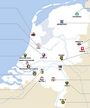

De: La Frikipedia, la enciclopedia extremadamente seria.
De: La Frikipedia, la enciclopedia extremadamente seria. De: La Frikipedia, la enciclopedia extremadamente seria.
| De la serie Países del planeta tierra: | |||||
| Helados Holanda | |||||
|---|---|---|---|---|---|
| |||||
| Lema: Que ruleee. En holandés: Oooie paazalpoorren | |||||
| Himno: ¡Si no hay pelito, en Holanda no es delito!
| |||||
| 
| |||||
| Capital | Amsterdam | ||||
| Mayor ciudad | Atlántida | ||||
| Lenguas oficiales | Alemán holandizado | ||||
| Gobierno | Anarquía | ||||
| Idolo nacional | Pedobear | ||||
| Área | Tierras ganadas al mar en una partida de póker | ||||
| Población | Cuatro gatos | ||||
| Moneda | lero | ||||
| Zona horaria | GTM GPS GPRS | ||||
| Dominio Internet | .ho | ||||
| Código telefónico | SOS
| ||||
| No importa este país, en unos años ya no existirá después de tanto vicio | |||||
Holanda es, probablemente, el país con más viciosos y degenerados por metro cuadrado más progre del mundo. Está lleno de porretas, prostitutas, gaylords, inmigrantes y pedobears. Allí, los niños que logran llegar a la edad adulta sin ningun vicio son considerados degenerados.
Holanda, la patria de Pedobear, está constituida como una monarquía dictatorial anarco-republicana. Su máximo dirigente intentó en varias ocasiones realizarse a si mismo un golpe de estado sin éxito alguno (los porros, ya se sabe). Cuando finalmente se le pasó el colocón dejó el país a su rollo.
Este país se mantiene a base de exportaciones masivas de tulipanes y helados, y con los derechos de imagen de pedobear. La industria interior se sustenta con el consumo de porros, ir de putas y el turismo sexual y de endrogarse.

Fumar porros, muchos porros, tantos que tienen bares solo para ello.
Concentrar a las mujeres de vida alegre (esto es putas) en escaparates para que, cada vez que pases le metas la cebolleta y de paso te entren ganas de comprarte un coche
Pasear en bicicletas idénticas a las de verano azul, colonizar lugares que nadie quiere como Indonesia o Suriname, fundar negocios basados en la estafa, practicar fresh banking y construir diques,propensos a romperse en invierno y en epocas de grandes inundaciones.
Tambien les gusta ir en bici, llevar zapatos de madera, comer tulipanes y contemplar molinos de viento, al igual que el Quijote, aunque los holandeses no alucinan debido al mucho leer, sino a los porros de los Coffee Shop.
La población de Holanda (también conocida como holandeses) se ha visto diezmada en las ultimas décadas debido a brotes de enfermedades derivadas de porros en mal estado y prostitutas con un exceso de kilometros en el cuerpo, ya me entienden. Según el último estudio de un chaval que lo vio en la tele, los holandeses son la hostia de grandes. Prueba de ello es la trágica muerte de un holandés en 2005; la cual se produjo un día de verano después de que el susodicho holandés bebiese un litro de mosto de trago, el cual fermentó de camino al estómago y pasó a la sangre en forma de alcohol produciendo la muerte instantánea por coma etílico.
La capital, La Haya, no tiene ninguna industria en absoluto, ni comercio, ni centros culturales, por lo que la población solo dispone del material tipico holandes antes citado: tulipanes, porros y meretrices.
En cuanto a Amsterdam, la segunda población por numero de habitantes cuanta con unos 500.000 millones de habitantes y esta lleno de hijos de puta (que lejos de ser un insulto, alli se considera algo normal, habida cuenta de la cantidad de vástagos de meretrices existentes en la ciudad)
El país tiene mogollón de autovías y autopistas de peaje de 40 carriles por sentido. Los puentes son muy molones y tal y el más bonito es el Erasmo de Rotterdam, llamado así por el denominado er(otismo)(org)asmo de Rotterdam, la desaparecida cadena de Supermercados de Madriz.
El idioma de Holanda es el holandés. Se parece al alemán, pero quitando todas las diéresis y duplicando cada letra sin ton ni son. Es decir, un alemán hablado por emporrados.
  Imperios de Europa Imperios de Europa
|
|---|
| Eslovaquia |
Autor(es):